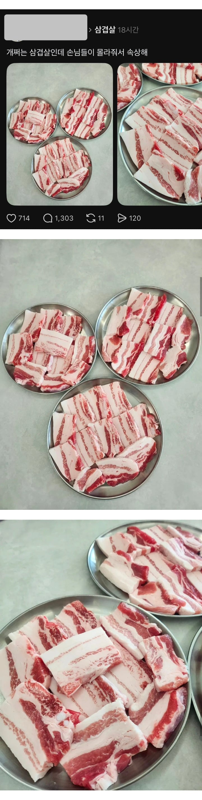

개쩌는 삼겹살인데 손님들이 몰라줘서 속상해.jpg
댓글
나는 조온나 좋아함
단골 식육점가면 저짝으로 썰어달라함
개붕이들 평소에는 같은 돈내고 차별 대우 받는거 보면 ㅈㄴ발작하면서
같은 돈내고 제일 좋은 부위 준다고 하니 제일 썩다리 부위(미추리)달라고 ㅈㄹ들이네 ㅋㅋㅋㅋ
그럼 니가 처먹고 손님들한테는 덜 쩌는 고기로 팔면 되잖아??
나는 좋아
저런게 맛있는건 맞음 딱 세 점
걍 직접 고르게 하는게 맞는듯 개쩌는걸 보여줘도 돼지 앞다리나 집어갈 놈들
무한리필 돼지고기 가봐라 저런거 나오나
키토식단 하는 입장에서..
존맛인데 저거 유행 안타면 좋겠다.
나만 먹게...
개지리는 부위는 맞는데 로스 싫어가지고 떡지방 안떼낸것도 맞늠
중간중간에 살코기가 있는데 어케 떡지방임
캠핑장에서 피운 참나무 장작에 남은 숯이 자글자글 할때 석쇠위에 직화로 촤악 올려서 기름 쏙 빠지고 불향 슬하게 배인 삼겹살 먹고싶다.
그릴에 기름칠하는용도아니냐 어쩌다 한 두 점 있으면 먹겠지만 ㅋㅋㅋ
근대 존나맛잇긴하겠네 ㅋㅋㅋ
저거 아니면 다 미추리야? 웰케 미추리 타령
돼지기름이 몸에좋긴 해. ㄹㅇ임.
조금먹어야해... 저건너무많잖아
이런부위는 한번이면 족해 전부 그러면 죽통 마려움
기름 ㅈㄴ 하얗고 육색 좋은거 보니까
ㄹㅇ 노릇하게 구워먹으면 소금 안찍어도 ㅈㄴ 고소하고 맛있겠는데
저렇게 떡지방 있는게 ㄹㅇ 존맛임
기름에 김치까지 구워먹으면 느끼하지도 않고
100그람 990원으로 찌개 넣는다면 이해는 한다. 고기먹고싶은거지 비계먹고싶은게 아님
그럼 삼겹살을 먹지말고 목살을 먹어야지
삼겹살은 비계가 많아서 삼겹살인데
기름덩어리는 먹으면 바로 질림
저게 씹고트는 맞지
제주도 비계삼겹살 왜욕먹었음?
기름 적은걸 원하면 삼겹말고 등심 얇게 잘라 구워먹던가.. 기름 많을수밖에 없는부위에 기름많다그러면 답이읍지
니나처먹어
지방이 맛있는 비싸고 좋은 삼겹살이면 저게 맛있긴 함
손님들은 개돼지라서 그래. 그냥 개돼지 수준에 맞춰 줘버려. 쉽잖아?